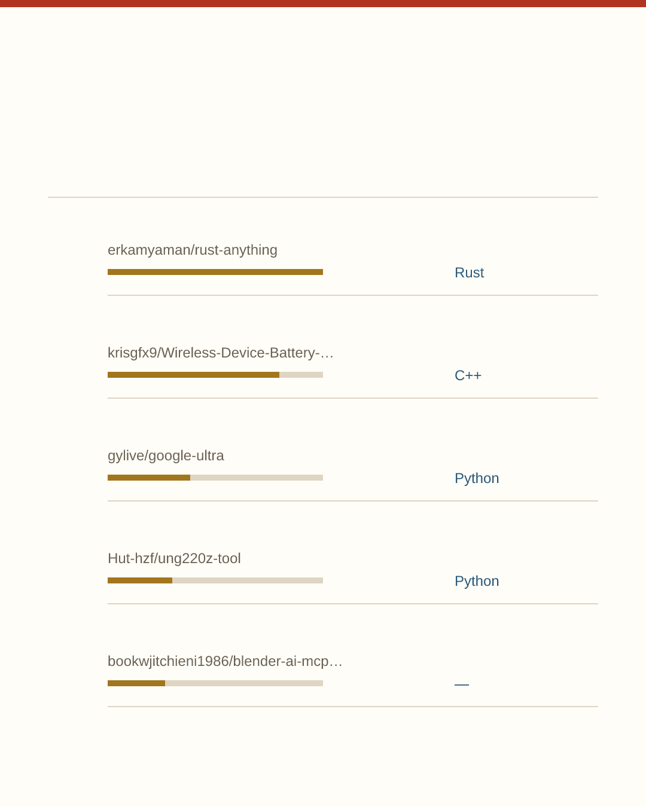

前沿 AI · 本周 5 个工具

很多团队手里都有一份跑了很多年的老代码，想换成 Rust，理由可能是更快、更好维护，或者只是不想再维护两套技术栈。但真动手时最怕的不是写不出 Rust，而是写完以后不知道新版本和老版本行为是不是一样。测试覆盖不全的地方，改完只能靠人肉点一遍，点不完就只能赌。
rust-anything 想解决的就是这个「不知道对不对」的问题。按 README 的说法，它的思路不是把原代码逐行翻译成 Rust，而是先把原程序的行为录下来，再让你的编程助手一段一段写 Rust，每写完一段就拿录像对一遍，对得上才往下走。README 里有一句话概括得很直接：它不翻译代码，它证明改写是对的。
这里说的「录像」，可以理解成把原程序在各种输入下的反应记下来，比如命令行工具收到某个参数输出什么、HTTP 服务收到某个请求返回什么。新写的 Rust 版本跑同样的输入，输出要和录像一致。这样每一小步都有据可查，而不是等整个项目改完再一次性对答案。
它覆盖的范围在描述里写得很清楚：TypeScript、Python、C、Go、Ruby、Java 写的命令行工具、HTTP 服务和库。也就是说，如果你手上是一个用 Python 写的内部命令行工具，或者一个 Go 写的接口服务，它都在目标范围内。反过来，前端页面、移动端应用这类不在描述里的东西，输入没有给出依据，这里就不多说了。
从定位上看，它更像是一个配合编程助手用的流程工具，而不是一个独立的编译器或转换器。README 提到它带 Claude Code 插件，也在 MCP Registry 里有条目。MCP 可以理解成一种让 AI 助手调用外部工具的通用接口，有了这个入口，助手就能在对话里直接驱动这套流程。主题标签里还有 agent-skills、codex 这些词，指向的也是和 AI 编程助手配合使用这个方向。
对普通开发者来说，实际用起来的画面大概是这样：你有一个想改写的项目，先让它把原程序的行为录下来，然后让助手按小块写 Rust，每块写完自动比对，不一致就回头改。好处是把「整体重写」这件大事拆成了很多件可以验证的小事，风险被摊开了。不确定性也有：录像覆盖不到的行为，比如某些异常路径或者依赖外部环境的逻辑，可能就验不出来，这部分仍然需要人自己判断。
安装方面，README 显示它提供 macOS、Linux、Windows 的原生程序，也可以从 crates.io 和 npm 拿到。crates.io 是 Rust 的包仓库，npm 是 JavaScript 的包仓库，两边都能装说明它照顾了不同技术背景的人。具体命令 README 摘录里没有给出，这里就不编了，按仓库里的快速开始部分操作即可。
Star 数是 6619，主语言是 Rust，许可证是 MIT，这些都写在仓库页面上。主题标签里既有 rust、ffi、pyo3、napi 这类和跨语言调用相关的词，也有 migration、porting、code-migration 这类和迁移相关的词，能看出它关注的是「把别的语言接到 Rust 上」这件事。至于它为什么现在受到关注，输入里能看到的依据主要是 Star 数量和 Trendshift 上的展示，更具体的原因没有给出，这里不做推测。
总的来说，这个工具适合那些已经有可运行的老项目、想逐步换成 Rust、又担心改坏行为的团队。它不承诺一键完成，也不替你做判断，它做的是把每一步的验证变得具体。如果你只是想把一段小脚本换成 Rust，可能用不上这么完整的流程；但如果你面对的是一个跑了很多年、测试又不全的服务，这套「先录后比」的思路值得看一眼。
无线鼠标用着用着突然没电，是很多人遇到过的小麻烦。想提前看一眼还剩多少电，通常得打开罗技、雷蛇这类厂商软件，等它加载完，再翻到设备页面。BatteryHub 想省掉的就是这一步：它把电量数字直接画在 Windows 任务栏的通知区域旁边，像这样显示耳机百分之三十、鼠标百分之九十三。
这个项目以前叫 Wireless Battery，版本 1.1.0 改了名字。README 里说，更新会保留你的设置、开机启动选择和电量历史，所以老用户升级不用重新配一遍。
它最突出的特点是轻。README 给出的数字是：程序体积约三百五十KB，运行时占用大约两兆内存。它是纯 C++ 和 Win32 写的，没有额外运行时，也没有后台服务。换句话说，它不像某些厂商软件那样装一堆驱动和常驻进程，而是一个安静待在小托盘里的程序。安装上，它支持按当前用户安装，不需要管理员权限，这对公司电脑或者不想动系统设置的人比较友好。
显示逻辑做得挺细。默认在任务栏显示图标加百分比。电量在百分之十五或以下时，数字变红；充电时旁边出现蓝色闪电；充满且仍然接着电源，闪电变成绿色对勾。设备休眠时文字会变暗，显示最后一次读到的数值，菜单里可以关掉这个变暗效果。还有一个可选项，能把已经断开的设备也显示出来，用变暗的叉号表示。这些细节不改变功能，但能让人少点一次鼠标去确认状态。
支持范围是它另一个卖点。README 列出的品牌包括罗技、雷蛇、赛睿、海盗船、HyperX、Glorious、Jabra、JBL、PlayStation 和 Xbox 手柄、三星 Galaxy Buds，以及任何 Windows 知道电量的蓝牙设备。多数情况下不需要装厂商软件，驱动可以直接查询设备。部分耳机则借助项目内置的 HeadsetControl 辅助程序来读电量。这里要提醒一句：README 也提到，个别设备需要专门设置、固件补丁，或者会和厂商软件冲突，具体写在它的设备表和限制说明里。所以买之前最好先确认自己的型号在不在支持列表里。
对普通人来说，上手路径不复杂。README 的建议很直接：只想要能用，就去最新发布页下载 BatteryHub-Setup 安装包。想免管理员权限，选按当前用户安装那个选项。安装时可能会遇到未签名应用的警告，README 的安装说明里有对应解释。有经验的用户可以拿便携压缩包，或者用命令行选项，也可以用 make 或 build.bat 从源码自己构建。至于装完多久能用上，这取决于你的设备能不能被识别，README 没有给出统一的等待时间，所以这里不做承诺。
谁适合用？如果你桌面上同时有罗技鼠标、赛睿耳机和一个手柄，又不想为每个品牌各装一套厂商软件，这个工具大概率能省掉反复开关软件的动作。谁不适合？如果你的设备型号不在支持列表里，或者你用的不是 Windows 10/11，那它帮不上忙，得先去看它的限制说明。
为什么现在值得看？输入里能确认的依据是：这个仓库有 5283 个 Star，说明关注它的人不少；README 强调轻量、免厂商软件、免管理员权限，这几点正好对应很多人对厂商软件臃肿的抱怨。不过它没有给出主题标签，也没有说明增长趋势，所以它为什么在这段时间被更多人看到，输入没有给出依据，这里不做推测。
最后说一句许可证。README 摘录里没有写许可证信息，所以这里不填，使用和分发前建议自己去仓库确认。
Google One 的 AI Pro 5TB 有一批免费试用 offer，但你在任何页面上都看不到它。它只存在于 Play 结算库的返回值里。这个仓库干的事，就是把这批藏起来的 offer 查出来，然后拉起收银台，确认首期是零元，再点订阅。
先说清楚它不是什么。它不是破解，也不是改 APK。README 写的原理是借 Google One 自己的进程去调 BillingClient，也就是安卓系统里负责结算的那个组件，不需要 Xposed，也不需要 root 以外的东西。换句话说，它没有伪造资格，只是把本来就在那儿的 offer 读出来给你看。
那普通人能拿到什么？按 README 当前的说法，有效的是 AI Pro 5TB，十二个月零元，到期前取消就不用付钱。开通后 Play 订阅页会写「即将扣款」和一个未来的日期，那是试用结束后的价格，不是现在扣。Ultra 那两档，也就是 20TB 和 30TB，offer 已经下架，脚本保留但暂时开不出来。README 里有一句原话：Ultra 目前开不出来，offer 已下架，或者账号被判地区不支持。
这里有个细节值得注意。十二个月那条在某些号上会被判「已订阅」，因为那个商品编号是历史映射。脚本会自动退到三个月那条，首期同样是零元。两条都拿不到，就是号不符合资格，换号。
接下来是三个硬条件，README 说试过几十个号总结出来的，必须同时满足。第一，Play 国家已经设置成美国，不满足的话 Google One 直接打不开。第二，已经绑了付款方式，不满足的话收银台拉不起来。第三，从没订阅过任何 Google One 方案。第三条最坑，因为 Play 记的是历史，不是当前状态，用过的号永久失去资格。
所以 README 有一句很直白的提醒：一个号基本只有一次机会，试用一旦发起过，哪怕没确认，offer 也会消失，别拿主力号试。这句话大概率是这个项目里最值钱的一句。
上手路径分两条。简单版是一个网页，源码在 web/index.html，单文件，下载后双击就能用，浏览器会打开一个页面。流程是点去登录、用要开的谷歌账号登进去，点去绑卡、绑一张卡，卡里留一美元就行，试用期间不扣，然后回页面点对应的套餐卡片，跳到 Google 结算页之后确认金额是零，点订阅。这条路不用装 Python，不用 root，不用数据线。
脚本版是 pro.py，要一台 root 过的安卓手机，USB 连着电脑，Magisk、KernelSU、APatch 都行，还要 frida。电脑上要 Python 3.9 以上，装一个 frida 包，adb 用 Android SDK 里的 platform-tools。手机上要开开发者选项里的 USB 调试。README 的建议是先试简单版，不行再上脚本。
没有安卓手机怎么办？README 给了替代方案：用 MuMu 模拟器。Windows 装 MuMu Player 12，Mac 装 MuMu Pro，需要 Apple Silicon，在设置里打开 ROOT 权限并重启。向导会自动用 adb 连上它，后面的流程和真机一样。
README 还提到一个傻瓜式向导：Mac 双击 start.command，Windows 双击 start.bat，会打开一个向导，自动检查环境、粘账号、逐个开通，最后在终端里出一张结果表格。
脚本版跑之前可以先自检，命令是 python3 pro.py --check，它会检查设备、root、frida-server、推送计费模块，还会顺手关掉会拦截 Play 网络的代理。全绿就可以跑号了。账号写成一个文本文件，一行一个，字段用四个短横线隔开，后面几项留空也行。然后跑 python3 pro.py accounts.txt。
失败的情况 README 也写了。账号不符合资格，Play 会说您不符合免费试用条件。没有付款方式，脚本会停下来提示你在手机上填完再按回车，每台设备手动绑一次，之后所有号共用这张卡。Play 账号没切过来，脚本会打印当前实际登录的是哪个号然后退出，这时可以加 --no-switch 重跑，让它只做校验不再尝试切换。收银台没弹出来，重跑一次。
最后说清楚适合谁。适合手里有闲置谷歌账号、有 root 安卓手机或者愿意装模拟器、并且能接受失败就换号的人。不适合只有主力号的人，也不适合不想碰命令行、不想折腾环境的人。另外这个项目没有在输入里写明许可证，使用前值得自己确认一下。
家里宽带出问题，装维师傅让你进光猫后台看看，你翻出背面贴纸上的账号密码，输进去却提示错误。这不是你记错了，而是这类光猫的管理密码会被远程系统定期换掉。ung220z-tool 想解决的就是这个具体场景。
先说清楚它针对谁。UNG220Z 是九联（英文名 Unionman）给中国移动做的一款光猫，也就是宽带入户那个带几根天线、背后插光纤的盒子。这个工具只针对这一个型号系列，不是通用光猫工具。
它为什么能拿到有效密码？README 里写了两条关键信息。第一，这类设备的网页管理页基于 `.gch` CGI 框架，登录口令由 TR-069 定期轮换。TR-069 是运营商远程管理光猫的协议，简单说就是运营商那边会定时改你的后台密码，所以你手里的密码会过期。第二，工具不走网页登录这条路，而是走 Telnet 通道。Telnet 是一种远程登录设备的老式命令行方式，登录进去就相当于拿到了设备的命令行。
进去之后它做三件事。先用 `sidbg 1 DB decry` 这条命令解密 `/userconfig/cfg/db_user_cfg.xml` 这个配置文件，README 说这条解密命令不需要口令，解出来就是明文 XML。然后从明文里提取网页账号、Telnet 口令、PPPoE 账号、WiFi 密钥和 root 口令。PPPoE 是宽带拨号用的账号，换路由器或者迁移宽带时经常要用到。root 口令是设备最高权限的密码，README 说它在 `/etc/shadow` 里存的是 SHA-256 crypt 形式，工具会拿常见出厂口令去比对。
换句话说，它省掉的是「翻贴纸、试密码、发现过期、再找客服」这一整圈折腾。 你只要知道光猫背面贴纸上的那组用户名和密码，工具就能自己把 Telnet 打开、登录进去、解密配置、打印一张凭据表，最后写一份带时间戳的日志文件。
上手门槛不高。依赖只有 Python 3.8 以上，标准库就够，不用 pip 装任何东西。运行 `python3 ung220z.py` 会依次问你光猫地址、用户名、密码，地址默认 192.168.1.1，用户名默认 user，密码输入时不显示。也可以一条命令带参数跑完，比如 `python3 ung220z.py -i 192.168.1.1 -u user -p '你的密码'`。如果不想让它调用浏览器，加 `--no-browser`。如果网页会话被占住导致进不去，有 `--unlock` 参数可以重启 httpd 解锁。
有几点需要提前知道。第一，工具假设设备已经开启 Telnet，README 说脚本会自动通过 `telnet.gch` 尝试开启，但能不能成功取决于机型，这里有不确定性。第二，部分机型的 Telnet 口令和网页口令不一样，遇到这种情况要用 `--telnet-user` 和 `--telnet-password` 单独指定。第三，root 口令那一步是拿常见出厂口令去比对，不是暴力破解，所以如果设备改过 root 密码，这一步大概率拿不到结果。
最需要说清楚的是使用边界。 README 开头就写了，仅用于你自己的设备，用于找回自己忘记的管理密码、迁移宽带配置或安全自查。未经授权对他人设备使用属于违法行为。这不是一句客套话，因为这类工具本质上是绕过运营商设定的密码轮换机制，用在自己家是维护，用在别人家就是另一回事了。
谁用得上？举个具体场景：你要换宽带套餐或者搬新家，需要把旧光猫里的宽带拨号账号导出来，但后台密码早就被改过，进不去。谁用不上？如果你只是想知道自家 WiFi 密码，那个通常印在贴纸背面，不需要这个工具；如果你用的是其他品牌或其他型号的光猫，这个工具也不适用。
至于为什么现在值得关注，输入里给出的依据只有 Star 数 1993 和 Python 这个主语言，没有主题标签，README 也没提任何趋势性内容。所以只能说它有一定关注度，具体原因输入没有给出依据，不做推测。
如果你用过 Blender，大概知道那种感觉：脑子里有个画面，手上却要一步步点菜单、拉参数、调材质。这个仓库想做的事，就是把这中间的一段手动操作，换成一句人话。
它叫 mcp-for-blender-pro，是一个 Blender 插件。装上之后，你在 Blender 里会多出一个聊天工作区。你在里面说想要什么，AI 先看你的场景里已经有什么，再决定动手做什么。README 里举的例子很具体：让它检查场景、搭一个产品展示的布局、摆放物体、指定材质、准备导出。整个过程你可以在对话里看它做了什么，也能在预览窗口里看结果。
这里有个关键词叫 MCP，全称是 Model Context Protocol，你可以把它理解成一套标准插座。AI 工具本来各说各话，有了这套插座，外部工具就能按统一方式连到 Blender 上，读场景、发指令。这个插件把插座内置了，所以像 OpenCode 这类支持认证式 Streamable HTTP MCP 的客户端，也能接进来用。
模型方面，它不绑死一家。README 列出的连接包括 OpenAI、Anthropic Claude、Google Gemini、OpenRouter、OpenCode Zen、Ollama 和自定义接口。云端和本地都行，本地就是 Ollama，模型跑在自己电脑上。连接可以保存，工作和个人的分开存，同一个服务商也能存多把钥匙。
它有两种干活方式。一种是单个助手，适合快速改动，你一句它一句。另一种是团队链，给大一点的任务用。团队里有三种角色：经理把需求拆成任务和验收标准，工人去做具体的场景操作，审核员检查结果，通过或者退回并写明问题。任务按顺序跑，这样场景修改不会乱。被卡住的任务有一次纠正机会，第二次审核还不过，流程就停。任务板上能看到分配、尝试和审核意见。
工具数量上，README 写的是 21 个场景工具，覆盖创建、检查、编辑、截图、搜索素材、查询 Blender 接口和导出场景。界面菜单支持英语、德语、法语、西班牙语和中文。
安装路径 README 写得很清楚：从 Releases 下载 mcp-for-blender-pro.zip，在 Blender 里打开编辑、偏好设置、获取扩展、菜单、从磁盘安装，选中这个压缩包，然后启用。README 标注需要 Blender 4.2 以上，下载页标注的是 Windows x64。许可证是 MIT，比较宽松。
谁用得上？做 3D 的美术，想快速试布局和材质的人，用得上。技术美术要自动化重复劳动，也用得上。开发者想把 AI 工具接到 Blender 上，同样用得上。谁用不上？如果你只是想学 Blender 基础操作，或者你用的不是 Windows x64、Blender 版本也低于 4.2，那这个插件大概率帮不上忙，甚至装不上。
为什么现在值得看？输入里能确认的依据是它有一千七百六十个 Star，主题标签覆盖 ai-agents、mcp、blender-mcp 这些方向，说明 MCP 接 Blender 这个组合有人在关注。但 Star 涨得快不快、社区热不热，输入没有给出更多数据，这里不做推测。
最后提醒一句：这类工具的实际效果，跟模型能力、场景复杂度关系很大。README 是项目方自己写的，真实体验有不确定性，建议先拿一个小场景试。